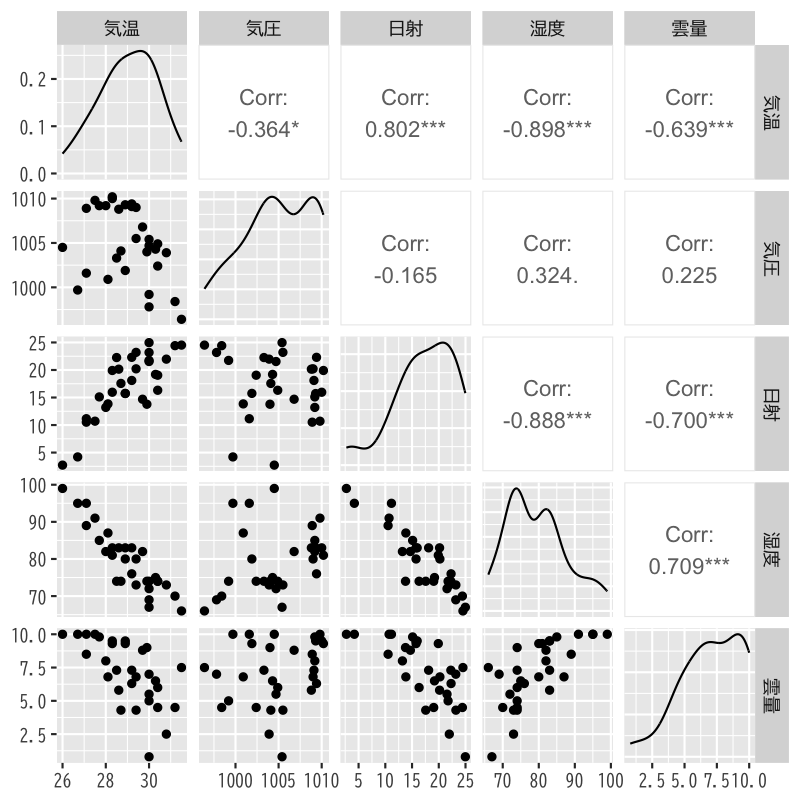

回帰分析
回帰モデルの考え方と推定
(Press ? for help, n and p for next and previous slide)
講義の内容
- 第1回 : 回帰モデルの考え方と推定
- 第2回 : モデルの評価
- 第3回 : モデルによる予測と発展的なモデル
回帰分析の考え方
回帰分析
- ある変量を別の変量で説明する関係式を構成する
- 関係式 : 回帰式 (regression equation)
- 説明される側 : 目的変数, 被説明変数, 従属変数, 応答変数
- 説明する側 : 説明変数, 独立変数, 共変量
- 説明変数の数による分類
- 一つの場合 : 単回帰 (simple regression)
- 複数の場合 : 重回帰 (multiple regression)
一般の回帰の枠組
- 説明変数 : \(x_1,\dotsc,x_p\) (p次元)
- 目的変数 : \(y\) (1次元)
回帰式 : \(y\) を \(x_1,\dotsc,x_p\) で説明するための関係式
\begin{equation} y=f(x_1,\dotsc,x_p) \end{equation}観測データ : n個の \((y,x_1,\dotsc,x_p)\) の組
\begin{equation} \{(y_i,x_{i1},\dotsc,x_{ip})\}_{i=1}^n \end{equation}
線形回帰
- 任意の \(f\) では一般的すぎて分析に不向き
\(f\) として 1次関数 を考える
ある定数 \(\beta_0,\beta_1,\dots,\beta_p\) を用いた式 :
\begin{equation} f(x_1,\dots,x_p)=\beta_0+\beta_1x_1+\cdots+\beta_px_p \end{equation}- 1次関数の場合 : 線形回帰 (linear regression)
- 一般の場合 : 非線形回帰 (nonlinear regression)
- 非線形関係は新たな説明変数の導入で対応可能
- 適切な多項式 : \(x_j^2, x_jx_k, x_jx_kx_l,\dotsc\)
- その他の非線形変換 : \(\log x_j, x_j^\alpha,\dotsc\)
- 全ての非線形関係ではないことに注意
回帰係数
線形回帰式
\begin{equation} y=\beta_0+\beta_1x_1+\cdots+\beta_px_p \end{equation}- \(\beta_0,\beta_1,\dots,\beta_p\) : 回帰係数 (regression coefficients)
- \(\beta_0\) : 定数項 / 切片 (constant term / intersection)
- 線形回帰分析 (linear regression analysis)
- 未知の回帰係数をデータから決定する分析方法
- 決定された回帰係数の統計的な性質を診断
回帰の確率モデル
- 回帰式の不確定性
- データは一般に観測誤差などランダムな変動を含む
- 回帰式がそのまま成立することは期待できない
確率モデル : データのばらつきを表す項 \(\epsilon_i\) を追加
\begin{equation} y_i=\beta_0+\beta_1 x_{i1}+\cdots+\beta_px_{ip}+\epsilon_i\quad (i=1,\dots,n) \end{equation}- \(\epsilon_1,\dots,\epsilon_n\) : 誤差項 / 撹乱項 (error / disturbance term)
- 誤差項は独立な確率変数と仮定
- 多くの場合，平均0，分散 \(\sigma^2\) の正規分布を仮定
- \(\epsilon_1,\dots,\epsilon_n\) : 誤差項 / 撹乱項 (error / disturbance term)
- 推定 (estimation) : 観測データから回帰係数を決定
回帰係数の推定
残差
- 残差 (residual) : 回帰式で説明できない変動
回帰係数 \(\boldsymbol{\beta}=(\beta_0,\beta_1,\dotsc,\beta_p)^{\mathsf{T}}\) を持つ回帰式の残差
\begin{equation} e_i(\boldsymbol{\beta})= y_i-(\beta_0+\beta_1 x_{i1}+\dotsb+\beta_px_{ip}) \quad (i=1,\dotsc,n) \end{equation}- 残差 \(e_i(\boldsymbol{\beta})\) の絶対値が小さいほど当てはまりがよい
最小二乗法
残差平方和 (residual sum of squares)
\begin{equation} S(\boldsymbol{\beta}) = \sum_{i=1}^ne_i(\boldsymbol{\beta})^2 \end{equation}最小二乗推定量 (least squares estimator)
残差平方和 \(S(\boldsymbol{\beta})\) を最小にする \(\boldsymbol{\beta}\)
\begin{equation} \boldsymbol{\hat{\beta}} = (\hat{\beta}_0,\hat{\beta}_1,\dotsc,\hat{\beta}_p)^{\mathsf{T}} = \arg\min_{\boldsymbol{\beta}}S(\boldsymbol{\beta}) \end{equation}
行列の定義
デザイン行列 (design matrix)
\begin{equation} X= \begin{pmatrix} 1 & x_{11} & x_{12} & \cdots & x_{1p} \\ 1 & x_{21} & x_{22} & \cdots & x_{2p} \\ \vdots & \vdots & \vdots & & \vdots \\ 1 & x_{n1} & x_{n2} & \cdots & x_{np} \end{pmatrix} \end{equation}- \(n\times(p{+}1)\)行列
ベクトルの定義
目的変数，誤差，回帰係数のベクトル
\begin{equation} \boldsymbol{y}= \begin{pmatrix} y_1 \\ y_2 \\ \vdots \\ y_n \end{pmatrix},\quad \boldsymbol{\epsilon}= \begin{pmatrix} \epsilon_1 \\ \epsilon_2 \\ \vdots \\ \epsilon_n \end{pmatrix},\quad \boldsymbol{\beta}= \begin{pmatrix} \beta_0 \\ \beta_1 \\ \vdots \\ \beta_p \end{pmatrix} \end{equation}- \(\boldsymbol{y},\boldsymbol{\epsilon}\) は\(n\)次元ベクトル
- \(\boldsymbol{\beta}\) は\(p{+}1\)次元ベクトル
行列・ベクトルによる表現
確率モデル
\begin{equation} \boldsymbol{y} =X\boldsymbol{\beta}+\boldsymbol{\epsilon} \end{equation}残差平方和
\begin{equation} S(\boldsymbol{\beta}) =(\boldsymbol{y}-X\boldsymbol{\beta})^{\mathsf{T}} (\boldsymbol{y}-X\boldsymbol{\beta}) \end{equation}
解の条件
解 \(\boldsymbol{\beta}\) では残差平方和の勾配は零ベクトル
\begin{equation} \frac{\partial S}{\partial\boldsymbol{\beta}}(\boldsymbol{\beta}) = \Bigl( \frac{\partial S}{\partial\beta_0}(\boldsymbol{\beta}), \frac{\partial S}{\partial\beta_1}(\boldsymbol{\beta}),\dotsc, \frac{\partial S}{\partial\beta_p}(\boldsymbol{\beta}) \Bigr)^{\mathsf{T}} =\boldsymbol{0} \end{equation}
演習
問題
- 残差平方和 \(S(\boldsymbol{\beta})\) をベクトル \(\boldsymbol{\beta}\) で微分して解の条件を求めなさい
解答例
残差平方和を展開しておく
\begin{align} S(\boldsymbol{\beta}) &= (\boldsymbol{y}-X\boldsymbol{\beta})^{\mathsf{T}} (\boldsymbol{y}-X\boldsymbol{\beta})\\ &= \boldsymbol{y}^{\mathsf{T}}\boldsymbol{y} -\boldsymbol{y}^{\mathsf{T}}X\boldsymbol{\beta} -(X\boldsymbol{\beta})^{\mathsf{T}}\boldsymbol{y} +(X\boldsymbol{\beta})^{\mathsf{T}}X\boldsymbol{\beta}\\ &= \boldsymbol{y}^{\mathsf{T}}\boldsymbol{y} -\boldsymbol{y}^{\mathsf{T}}X\boldsymbol{\beta} -\boldsymbol{\beta}^{\mathsf{T}}X^{\mathsf{T}}\boldsymbol{y} +\boldsymbol{\beta}^{\mathsf{T}}X^{\mathsf{T}}X\boldsymbol{\beta}\\ \end{align}ベクトルによる微分を行うと以下のようになる
\begin{align} \frac{\partial S}{\partial\boldsymbol{\beta}}(\boldsymbol{\beta}) &= -(\boldsymbol{y}^{\mathsf{T}}X)^{\mathsf{T}} -X^{\mathsf{T}}\boldsymbol{y} +(X^{\mathsf{T}}X+(X^{\mathsf{T}}X)^{\mathsf{T}})\boldsymbol{\beta}\\ &= -2X^{\mathsf{T}}\boldsymbol{y} +2X^{\mathsf{T}}X\boldsymbol{\beta} \end{align}
したがって \(\boldsymbol{\beta}\) の満たす条件は以下となる
\begin{equation} -2X^{\mathsf{T}}\boldsymbol{y} +2X^{\mathsf{T}}X\boldsymbol{\beta} =0 \quad\text{ より } \end{equation}\begin{equation} X^{\mathsf{T}}X\boldsymbol{\beta} = X^{\mathsf{T}}\boldsymbol{y} \end{equation}
補足
成分ごとの計算は以下のようになる
\begin{equation} \frac{\partial S}{\partial\beta_j}(\boldsymbol{\beta}) = -2\sum_{i=1}^n\Bigl(y_i-\sum_{k=0}^p\beta_kx_{ik}\Bigr)x_{ij} =0 \end{equation}ただし， \(x_{i0}=1\; (i=1,\dotsc,n)\), \(j=0,1,\dotsc,p\)
\begin{equation} \sum_{i=1}^nx_{ij}\Bigl(\sum_{k=0}^px_{ik}\beta_k\Bigr) = \sum_{i=1}^nx_{ij}y_i\quad(j=0,1,\dotsc,p) \end{equation}\(x_{ij}\) は行列 \(X\) の \((i,j)\) 成分であることに注意
正規方程式
正規方程式
正規方程式 (normal equation)
\begin{equation} X^{\mathsf{T}}X\boldsymbol{\beta} =X^{\mathsf{T}}\boldsymbol{y} \end{equation}- \(X^{\mathsf{T}}X\) : Gram行列 (Gram matrix)
- \((p{+}1)\times(p{+}1)\) 行列 (正方行列)
- 半正定値行列 (固有値が非負)
正規方程式の解
- 正規方程式の基本的な性質
- 正規方程式は必ず解をもつ (一意に決まらない場合もある)
- 正規方程式の解は最小二乗推定量であるための必要条件
- 解の一意性の条件
- Gram 行列 \(X^{\mathsf{T}}X\) が 正則
- \(X\) の列ベクトルが独立 (後述)
正規方程式の解
\begin{equation} \boldsymbol{\hat{\beta}} = (X^{\mathsf{T}}X)^{-1}X^{\mathsf{T}}\boldsymbol{y} \end{equation}
最小二乗推定量の性質
解析の上での良い条件
最小二乗推定量がただ一つだけ存在する条件
- \(X^{\mathsf{T}}X\) が正則
- \(X^{\mathsf{T}}X\) の階数が \(p{+}1\)
- \(X\) の階数が \(p{+}1\)
- \(X\) の列ベクトルが 1次独立
これらは同値条件
解析の上での良くない条件
- 説明変数が1次従属 : 多重共線性 (multicollinearity)
- 多重共線性が強くならないように説明変数を選択
- \(X\) の列(説明変数)の独立性を担保する
- 説明変数が互いに異なる情報をもつように選ぶ
- 似た性質をもつ説明変数の重複は避ける
推定の幾何学的解釈
あてはめ値 / 予測値 (fitted values / predicted values)
\begin{equation} \boldsymbol{\hat{y}} = X\boldsymbol{\hat{\beta}} = \hat{\beta}_{0} X_{0(\text{切片})}\;+ \dots + \hat{\beta}_{p} X_{p(\text{第p成分})} \end{equation}

Figure 1: \(n=3\) , \(p+1=2\) の場合の最小二乗法による推定
- 最小二乗推定量 \(\boldsymbol{\hat{y}}\) の幾何学的性質
- \(L[X]\) : \(X\) の列ベクトルが張る \(\mathbb{R}^n\) の線形部分空間
- \(X\) の階数が \(p{+}1\) ならば \(L[X]\) の次元は \(p{+}1\) (解の一意性)
- \(\boldsymbol{\hat{y}}\) は \(\boldsymbol{y}\) の \(L[X]\) への直交射影
残差 (residuals) \(\boldsymbol{\hat{\epsilon}}=\boldsymbol{y}-\boldsymbol{\hat{y}}\) はあてはめ値 \(\boldsymbol{\hat{y}}\) に直交
\begin{equation} \boldsymbol{\hat{\epsilon}}\cdot\boldsymbol{\hat{y}}=0 \end{equation}
線形回帰式と標本平均
- \(\boldsymbol{x}_i=(x_{i1},\dotsc,x_{ip})^{\mathsf{T}}\): \(i\) 番目の観測データの説明変数
説明変数および目的変数の標本平均
\begin{align} \boldsymbol{\bar{x}} &=\frac{1}{n}\sum_{i=1}^n\boldsymbol{x}_i, &\bar{y} % \overline{\boldsymbol{x}^2}&=\frac{1}{n}\sum_{i=1}^n\boldsymbol{x}_i\boldsymbol{x}_i^{\mathsf{T}},& &=\frac{1}{n}\sum_{i=1}^ny_i,& % \overline{\boldsymbol{x}y}&=\frac{1}{n}\sum_{i=1}^n\boldsymbol{x}_iy_i \end{align}\(\boldsymbol{\hat{\beta}}\) が最小二乗推定量のとき以下が成立
\begin{equation} \bar{y} = (1,\boldsymbol{\bar{x}}^{\mathsf{T}})\boldsymbol{\hat{\beta}} \end{equation}
演習
問題
- 最小二乗推定量について以下を示しなさい
残差の標本平均が0となる
目的変数や残差のベクトルについて以下を示せばよい
\begin{equation} \boldsymbol{1}^{\mathsf{T}}(\boldsymbol{y}-\boldsymbol{\hat{y}}) =\boldsymbol{1}^{\mathsf{T}}\boldsymbol{\hat{\epsilon}} =0 \end{equation}ただし \(\boldsymbol{1}=(1,\dotsc,1)^{\mathsf{T}}\) とする
回帰式が標本平均を通る
\begin{equation} \bar{y} = (1,\boldsymbol{\bar{x}}^{\mathsf{T}})\boldsymbol{\hat{\beta}} \end{equation}
解答例
残差の表現を整理する
\begin{align} \boldsymbol{\hat{\epsilon}} &= \boldsymbol{y}-\boldsymbol{\hat{y}} = \boldsymbol{y}-X\boldsymbol{\hat{\beta}}\\ &= \boldsymbol{y}-X(X^{\mathsf{T}}X)^{-1}X^{\mathsf{T}}\boldsymbol{y} \end{align}左から \(X^{\mathsf{T}}\) を乗じる
\begin{equation} X^{\mathsf{T}}\boldsymbol{y}-X^{\mathsf{T}}X(X^{\mathsf{T}}X)^{-1}X^{\mathsf{T}}\boldsymbol{y} = X^{\mathsf{T}}\boldsymbol{y}-X^{\mathsf{T}}\boldsymbol{y} =\boldsymbol{0} \end{equation}- 行列 \(X\) の 1列目が \(\boldsymbol{1}\) であることより明らか
説明変数の標本平均をデザイン行列で表す
\begin{equation} \boldsymbol{1}^{\mathsf{T}}X = n(1,\boldsymbol{\bar{x}}^{\mathsf{T}}) \end{equation}したがって以下が成立する
\begin{align} n(1,\boldsymbol{\bar{x}}^{\mathsf{T}})\boldsymbol{\hat{\beta}} &= \boldsymbol{1}^{\mathsf{T}}X\boldsymbol{\hat{\beta}}\\ &= \boldsymbol{1}^{\mathsf{T}}\boldsymbol{\hat{y}} = \boldsymbol{1}^{\mathsf{T}}\boldsymbol{y}\\ &= n\bar{y} \end{align}
残差の分解
最小二乗推定量の残差
観測値と推定値 \(\boldsymbol{\hat{\beta}}\) による予測値の差
\begin{equation} \hat{\epsilon}_i= y_i-(\hat{\beta}_0+\hat{\beta}_1 x_{i1}+\dotsb+\hat{\beta}_px_{ip}) \quad (i=1,\dotsc,n) \end{equation}- 誤差項 \(\epsilon_1,\dotsc,\epsilon_n\) の推定値
- 全てができるだけ小さいほど良い
- 予測値とは独立に偏りがないほど良い
残差ベクトル
\begin{equation} \boldsymbol{\hat{\epsilon}} =\boldsymbol{y}-\boldsymbol{\hat{y}} =(\hat{\epsilon}_1,\hat{\epsilon}_2,\dotsc,\hat{\epsilon}_n)^{\mathsf{T}} \end{equation}
平方和の分解
- \(\bar{\boldsymbol{y}}=\bar{y}\boldsymbol{1}=(\bar{y},\bar{y},\dotsc,\bar{y})^{\mathsf{T}}\) : 標本平均のベクトル
- いろいろなばらつき
- \(S_y=(\boldsymbol{y}-\bar{\boldsymbol{y}})^{\mathsf{T}} (\boldsymbol{y}-\bar{\boldsymbol{y}})\) : 目的変数のばらつき
- \(S_{\phantom{y}}=(\boldsymbol{y}-\boldsymbol{\hat{y}})^{\mathsf{T}} (\boldsymbol{y}-\boldsymbol{\hat{y}})\) : 残差のばらつき (\(\boldsymbol{\hat{\epsilon}}^{\mathsf{T}}\boldsymbol{\hat{\epsilon}}\))
- \(S_r=(\boldsymbol{\hat{y}}-\bar{\boldsymbol{y}})^{\mathsf{T}} (\boldsymbol{\hat{y}}-\bar{\boldsymbol{y}})\) : あてはめ値(回帰)のばらつき
3つのばらつき(平方和)の関係
\begin{equation} (\boldsymbol{y}-\bar{\boldsymbol{y}})^{\mathsf{T}} (\boldsymbol{y}-\bar{\boldsymbol{y}}) = (\boldsymbol{y}-\boldsymbol{\hat{y}})^{\mathsf{T}} (\boldsymbol{y}-\boldsymbol{\hat{y}})+ (\boldsymbol{\hat{y}}-\bar{\boldsymbol{y}})^{\mathsf{T}} (\boldsymbol{\hat{y}}-\bar{\boldsymbol{y}}) \end{equation}\begin{equation} S_y=S+S_r \end{equation}
演習
問題
- 以下の関係式を示しなさい
あてはめ値と残差のベクトルが直交する
\begin{equation} \boldsymbol{\hat{y}}^{\mathsf{T}}(\boldsymbol{y}-\boldsymbol{\hat{y}}) = \boldsymbol{\hat{y}}^{\mathsf{T}}\boldsymbol{\hat{\epsilon}} =0 \end{equation}残差平方和の分解が成り立つ
\begin{equation} S_y=S+S_r \end{equation}
解答例
残差の表現を整理する
\begin{align} \boldsymbol{\hat{\epsilon}} &= \boldsymbol{y}-X(X^{\mathsf{T}}X)^{-1}X^{\mathsf{T}}\boldsymbol{y}\\ &= (I-X(X^{\mathsf{T}}X)^{-1}X^{\mathsf{T}})\boldsymbol{y} \end{align}左から \(\boldsymbol{\hat{y}}\) を乗じる
\begin{align} \boldsymbol{\hat{y}}^{\mathsf{T}}\boldsymbol{\hat{\epsilon}} &= \boldsymbol{\hat{\beta}}^{\mathsf{T}}X^{\mathsf{T}} (I-X(X^{\mathsf{T}}X)^{-1}X^{\mathsf{T}})\boldsymbol{y}\\ &= \boldsymbol{\hat{\beta}}^{\mathsf{T}} (X^{\mathsf{T}}-X^{\mathsf{T}}X(X^{\mathsf{T}}X)^{-1}X^{\mathsf{T}})\boldsymbol{y}\\ &= \boldsymbol{\hat{\beta}}^{\mathsf{T}} (X^{\mathsf{T}}-X^{\mathsf{T}})\boldsymbol{y}=0 \end{align}
以下の関係を用いて展開すればよい
\begin{equation} \boldsymbol{y}-\bar{\boldsymbol{y}} =\boldsymbol{y}-\boldsymbol{\hat{y}}+\boldsymbol{\hat{y}}-\bar{\boldsymbol{y}} \end{equation}ただし \(\bar{\boldsymbol{y}}=\bar{y}\boldsymbol{1}\)
このとき以下の項は0になる
\begin{equation} (\boldsymbol{\hat{y}}-\bar{\boldsymbol{y}})^{\mathsf{T}} (\boldsymbol{y}-\boldsymbol{\hat{y}}) = \boldsymbol{\hat{y}}^{\mathsf{T}} (\boldsymbol{y}-\boldsymbol{\hat{y}}) - \bar{y}\boldsymbol{1}^{\mathsf{T}} (\boldsymbol{y}-\boldsymbol{\hat{y}}) =0 \end{equation}
決定係数
回帰式の寄与
ばらつきの分解
\begin{equation} S_y\;\text{(目的変数)} =S\;\text{(残差)} +S_r\;\text{(あてはめ値)} \end{equation}回帰式で説明できるばらつきの比率
\begin{equation} \text{(回帰式の寄与率)} = \frac{S_{r}}{S_{y}} = 1-\frac{S}{S_{y}} \end{equation}- 回帰式のあてはまり具合を評価する代表的な指標
決定係数 (\(R^2\)値)
決定係数 (R-squared)
\begin{equation} R^2 = 1-\frac{\sum_{i=1}^n\hat{\epsilon}_i^2}{\sum_{i=1}^n(y_i-\bar{y})^2} \end{equation}自由度調整済み決定係数 (adjusted R-squared)
\begin{equation} \bar{R}^2 = 1-\frac{\frac{1}{n{-}p{-}1}\sum_{i=1}^n\hat{\epsilon}_i^2} {\frac{1}{n{-}1}\sum_{i=1}^n(y_i-\bar{y})^2} \end{equation}- 不偏分散で補正している
解析の事例
実データによる例
気温に影響を与える要因の分析
データの概要
日付 気温 降雨 日射 降雪 風向 風速 気圧 湿度 雲量
- 気温を説明する5種類の線形回帰モデルを検討
- モデル1 : 気温 = F(気圧)
- モデル2 : 気温 = F(日射)
- モデル3 : 気温 = F(気圧, 日射)
- モデル4 : 気温 = F(気圧, 日射, 湿度)
- モデル5 : 気温 = F(気圧, 日射, 雲量)
分析の視覚化
関連するデータの散布図

Figure 2: 散布図
モデル1の推定結果

Figure 3: モデル1
モデル2の推定結果

Figure 4: モデル2
モデル3の推定結果

Figure 5: モデル3
観測値とあてはめ値の比較

Figure 6: モデルの比較
モデルの比較
決定係数(\(R^{2}\), Adjusted \(R^{2}\))
Beta SE Beta SE Beta SE Beta SE Beta SE Abbreviations: CI = Confidence Interval, SE = Standard Error
次回の予定
- 第1回 : 回帰モデルの考え方と推定
- 第2回 : モデルの評価
- 第3回 : モデルによる予測と発展的なモデル